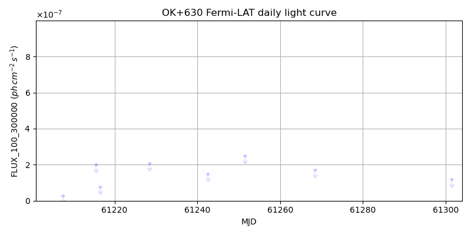
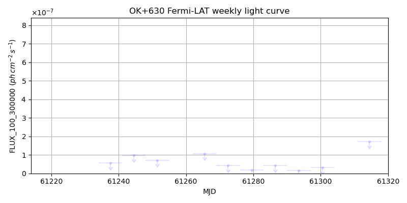
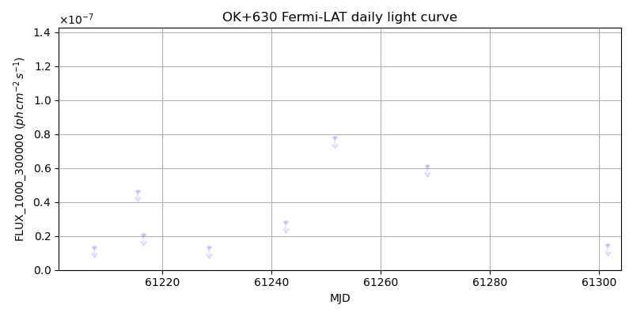
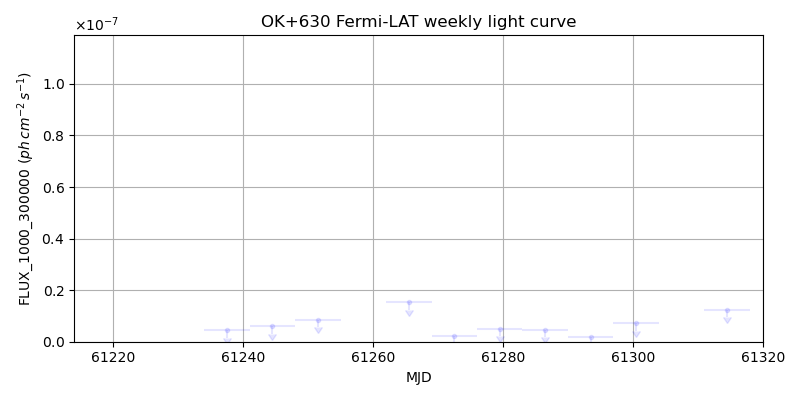

LAT Lightcurve site: https://fermi.gsfc.nasa.gov/ssc/data/access/lat/msl_lc/source/OK_p630
NED: Query
Time of last update of this page: UT: 2026-10-10 15:21 (MJD: 61323.640)
| Property | Value |
|---|---|
| R.A. | 9:21:36.24 |
| Dec. | 62:15:50.4 |
| z | 1.458 |
| 3FGL SpectrumType | |
| 3FGL PL Index | -1.00 |
| 3FGL Flux_100_300000 | -1.00e+00 |
| 3FGL Flux_1000_300000 | -1.00e+00 |
| 3FGL Flux >200 GeV | -1.00e+00 |
| 3FGL Extrap. Crab >200 GeV | -1.00 |
| 3FGL Flux After EBL Absorption >200GeV | -1.00e+00 |
| 3FGL EBL Crab Fraction >200GeV | -1.00 |

| MJD | dMJD | Flux | dFlux | Frac3FGL | FracCrab>200GeV | EBLFracCrab>200GeV |
|---|---|---|---|---|---|---|
| 61242.50 | 0.50 | 1.50e-07 | 0.00e+00 | 0.00 | 0.00 | -0.00 |
| 61251.50 | 0.50 | 2.49e-07 | 0.00e+00 | 0.00 | 0.00 | -0.00 |
| 61254.50 | 0.50 | 2.35e-06 | 0.00e+00 | 0.00 | 0.00 | -0.00 |
| 61268.50 | 0.50 | 1.71e-07 | 0.00e+00 | 0.00 | 0.00 | -0.00 |
| 61301.50 | 0.50 | 1.20e-07 | 0.00e+00 | 0.00 | 0.00 | -0.00 |

| MJD | dMJD | Flux | dFlux | Frac3FGL | FracCrab>200GeV | EBLFracCrab>200GeV |
|---|---|---|---|---|---|---|
| 61279.50 | 3.50 | 1.87e-08 | 0.00e+00 | 0.00 | 0.00 | -0.00 |
| 61286.50 | 3.50 | 4.18e-08 | 0.00e+00 | 0.00 | 0.00 | -0.00 |
| 61293.50 | 3.50 | 1.48e-08 | 0.00e+00 | 0.00 | 0.00 | -0.00 |
| 61300.50 | 3.50 | 3.17e-08 | 0.00e+00 | 0.00 | 0.00 | -0.00 |
| 61314.50 | 3.50 | 1.71e-07 | 0.00e+00 | 0.00 | 0.00 | -0.00 |

| MJD | dMJD | Flux | dFlux | Frac3FGL | FracCrab>200GeV | EBLFracCrab>200GeV |
|---|---|---|---|---|---|---|
| 61242.50 | 0.50 | 2.82e-08 | 0.00e+00 | 0.00 | 0.00 | -0.00 |
| 61251.50 | 0.50 | 7.79e-08 | 0.00e+00 | 0.00 | 0.00 | -0.00 |
| 61254.50 | 0.50 | 1.49e-07 | 0.00e+00 | 0.00 | 0.00 | -0.00 |
| 61268.50 | 0.50 | 6.11e-08 | 0.00e+00 | 0.00 | 0.00 | -0.00 |
| 61301.50 | 0.50 | 1.46e-08 | 0.00e+00 | 0.00 | 0.00 | -0.00 |

| MJD | dMJD | Flux | dFlux | Frac3FGL | FracCrab>200GeV | EBLFracCrab>200GeV |
|---|---|---|---|---|---|---|
| 61279.50 | 3.50 | 5.09e-09 | 0.00e+00 | 0.00 | 0.00 | -0.00 |
| 61286.50 | 3.50 | 4.71e-09 | 0.00e+00 | 0.00 | 0.00 | -0.00 |
| 61293.50 | 3.50 | 1.86e-09 | 0.00e+00 | 0.00 | 0.00 | -0.00 |
| 61300.50 | 3.50 | 7.07e-09 | 0.00e+00 | 0.00 | 0.00 | -0.00 |
| 61314.50 | 3.50 | 1.25e-08 | 0.00e+00 | 0.00 | 0.00 | -0.00 |
--------------------------------------------------------- Using user-supplied coords: 9:21:36.24 62:15:50.4 2000 --------------------------------------------------------- FLWO UT night of: 2026-10-11 Local Sid. @ Midnight: 00:55 Sunset (-15.0) (local, UT): 19:04 02:04 Sunrise (-15.0) (local, UT): 05:18 12:18 Moonrise (local, UT): Moonset (local, UT): Moon phase: 0.01 --------------------------------------------------------- AzTime LSID UT Obj_el Obj_az Mn_el Mn_az Sep. --------------------------------------------------------- 19:04 19:58 02:04 5.5 350.2 -16.1 264.2 87.7 19:34 20:29 02:34 4.6 353.6 -22.3 267.8 87.9 20:04 20:59 03:04 4.1 357.1 -28.5 271.5 88.1 20:34 21:29 03:34 4.0 0.6 -34.7 275.4 88.3 21:04 21:59 04:04 4.3 4.2 -40.8 279.7 88.5 21:34 22:29 04:34 4.9 7.6 -46.8 284.6 88.7 22:04 22:59 05:04 5.9 11.0 -52.7 290.5 88.9 22:34 23:29 05:34 7.3 14.2 -58.4 297.7 89.1 23:04 23:59 06:04 9.0 17.3 -63.6 307.3 89.4 23:34 00:29 06:34 11.1 20.2 -68.1 320.3 89.6 00:04 00:59 07:04 13.4 22.9 -71.3 338.2 89.8 00:34 01:29 07:34 16.0 25.3 -72.6 0.4 90.1 01:04 01:59 08:04 18.8 27.4 -71.5 22.7 90.3 01:34 02:30 08:34 21.9 29.3 -68.3 40.8 90.5 02:04 03:00 09:04 25.1 30.9 -63.9 54.1 90.8 02:34 03:30 09:34 28.4 32.1 -58.7 63.8 91.0 03:04 04:00 10:04 31.9 32.9 -53.1 71.2 91.3 03:34 04:30 10:34 35.4 33.3 -47.3 77.2 91.5 04:04 05:00 11:04 38.9 33.2 -41.4 82.2 91.8 04:34 05:30 11:34 42.3 32.5 -35.3 86.6 92.0 05:04 06:00 12:04 45.7 31.2 -29.2 90.6 92.3 05:18 06:14 12:18 47.2 30.4 -26.5 92.4 92.4 --------------------------------------------------------- Dark hours >55 deg.: 0.00